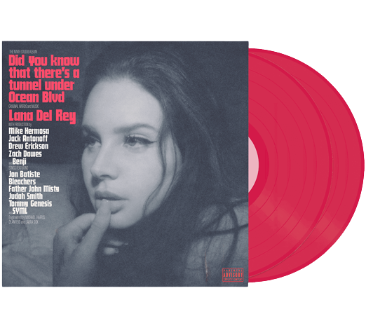

Music
Lana Del Rey es una maestra en el arte de diseñar discos conceptuales de pop alternativo que, además de estar construidos con envidiable sofisticación, siempre amplifican su propia mitología cultural. Enamorarse de ella resulta inevitable con cada uno de sus discos, pero su identidad artística se vuelve más misteriosa. lo general evita incluir detalles personales en sus letras. En esta oportunidad, las canciones, producidas por su colaborador habitual, Jack Antonoff, suenan sueltas y espontáneas.